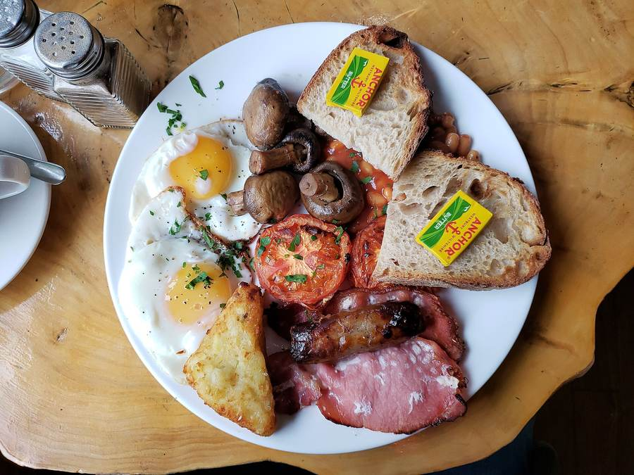

BRK 01
English Breakfast
The full works, cooked fresh.
4Churchfield Road · Acton Central
A friendly, cosy neighbourhood café a moment from Acton Central station. English and Turkish breakfasts, brunch on sourdough and a good latte, from 6am, Monday to Saturday.
Opening times
Closed on Sundays. Hours can change on bank holidays, so call ahead if you’re making a special trip.
| Day | Hours | Status |
|---|---|---|
| MON | 06:00 – 16:00 | OPEN |
| TUE | 06:00 – 16:00 | OPEN |
| WED | 06:00 – 16:00 | OPEN |
| THU | 06:00 – 16:00 | OPEN |
| FRI | 06:00 – 16:00 | OPEN |
| SAT | 06:00 – 16:00 | OPEN |
| SUN | —— | CLOSED |
Find us
Just along from Acton Central station, at the start of Churchfield Road.
Get directions